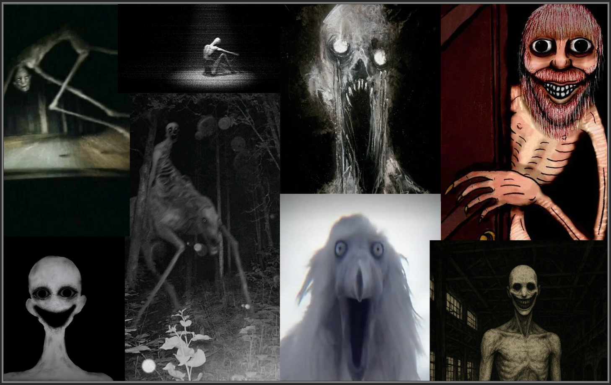
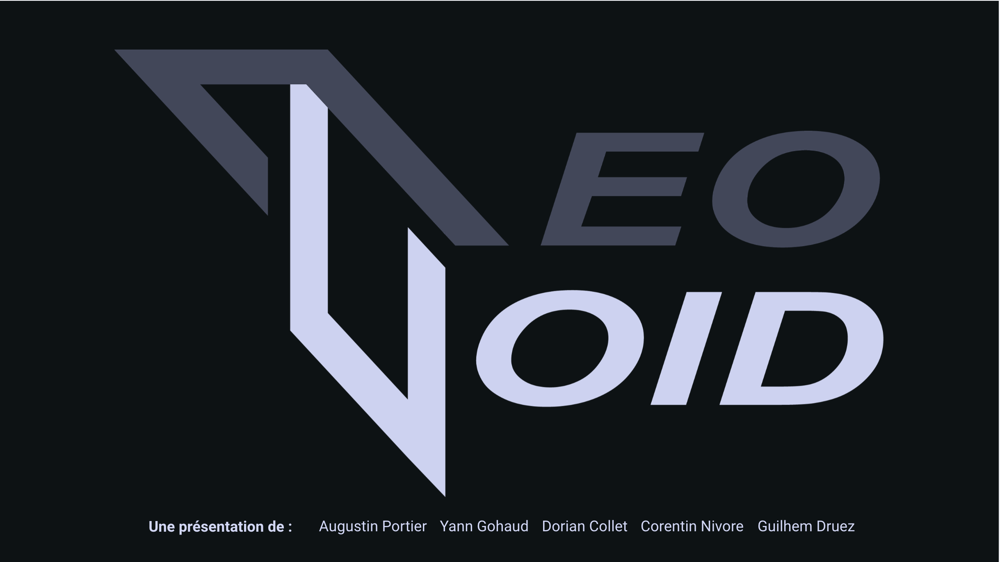

// Visuels du projet


.png)


Neo Void est un studio indépendant né d'un projet d'école passionné, comptant déjà deux créations à son actif. Notre production phare, Gipotermiya, illustre notre volonté de créer des expériences narratives immersives et glaciales qui perdurent au-delà des salles de classe. Explorez nos univers sur itch.io.
NEO VOID n'est pas seulement un projet d'études, c'est un laboratoire digital né d'une page blanche. Durant 5 mois, nous avons exploré les limites de la création et de la stratégie pour bâtir un univers complet. De la conception de l'identité visuelle à la préparation millimétrée de l'oral de soutenance, chaque étape a été un défi d'organisation. Gérer un projet de cette envergure sur une période aussi longue a nécessité une répartition chirurgicale des tâches et une vision à 360°. NEO VOID incarne cette capacité à transformer une idée abstraite en un produit fini, prêt à être défendu face à un jury exigeant.
Désigné Chef de Projet pour cette aventure, j'ai assuré le rôle de pivot central entre la vision stratégique et l'exécution technique. Au-delà de la simple coordination, ma mission a été de garantir la cohésion de l'équipe et le respect strict du cahier des charges.
Mes piliers d'action :
Management d'équipe : Optimisation de la charge de travail individuelle et arbitrage des priorités.
Résolution de problèmes : Identification proactive des points de friction et médiation des besoins techniques.
Garant de la qualité : Veiller à ce que chaque livrable réponde non seulement aux attentes, mais dépasse les standards fixés.
Cette expérience m'a apporté une maîtrise de la gestion de projet en temps réel, renforçant mon aptitude à diriger sous pression tout en maintenant un haut niveau d'exigence.
// Visuels du projet
